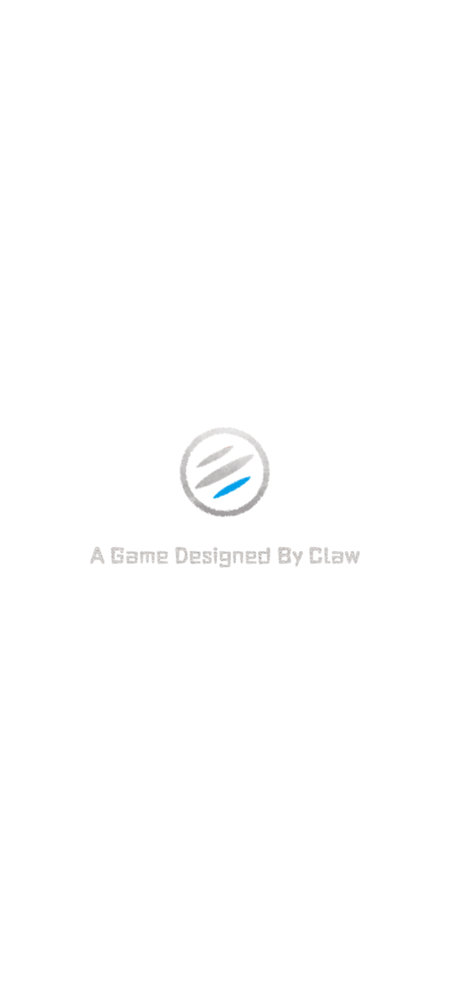
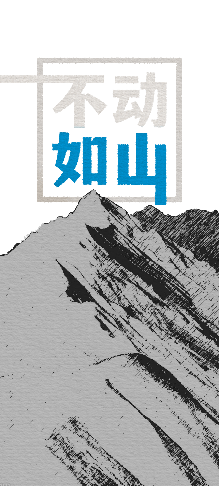
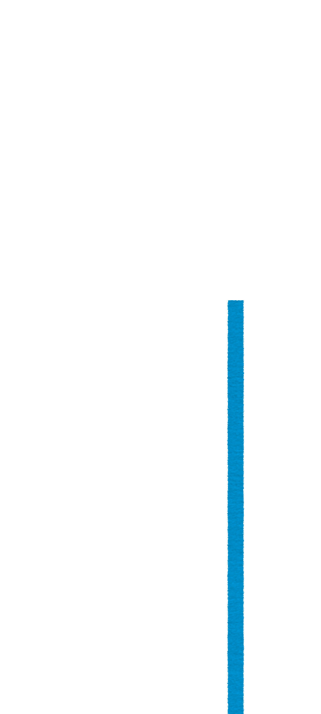

横看成岭侧成峰远近高低各不同不识庐山真面目只缘身在此山中
横看成岭侧成峰远近高低各不同不识庐山真面目只缘身在此山中
岱宗夫如何齐鲁青未了造化钟神秀阴阳割昏晓荡胸生曾云决眦入归鸟会当凌绝顶一览众山小
岱宗夫如何齐鲁青未了造化钟神秀阴阳割昏晓荡胸生曾云决入归鸟会当凌绝顶一览众山小
远上寒山石径斜白云生处有人家停车坐爱枫林晚霜叶红于二月花
远上寒山石径斜白云生处有人家停车坐爱枫林晚霜叶红于二月花
空山新雨后天气晚来秋明月松间照清泉石上流竹喧归浣女莲动下渔舟随意春芳歇王孙自可留
空山新雨后天气晚来秋明月松间照清泉石上流竹喧归浣女莲动下渔舟随意春芳歇王孙自可留
天门中断楚江开碧水东流自此回两岸青山相对出孤帆一片日边来
天门中断楚江开碧水东流自此回两岸青山相对出孤帆一片日边来
朝辞白帝彩云间千里江陵一日还两岸猿声啼不住轻舟已过万重山
朝辞白帝彩云间千里江陵一日还两岸猿声啼不住轻舟已过万重山
霁天欲晓未明间满目奇峰总可观却有一峰忽然长方知不动是真山
霁天欲晓未明间满目奇峰总可观却有一峰忽然长方知不动是真山


\n正在加载日志
\n正在加载名单